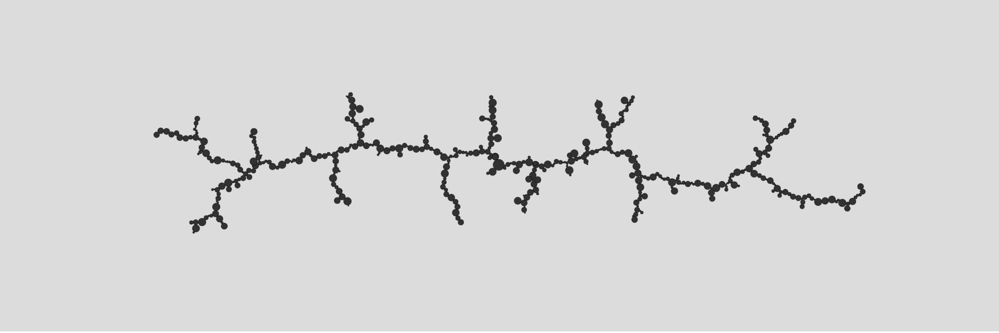
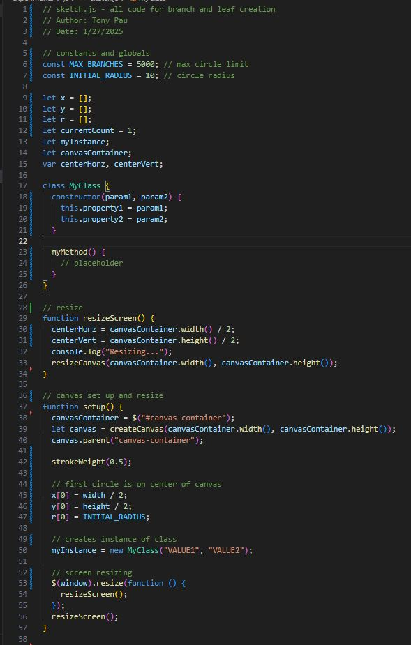
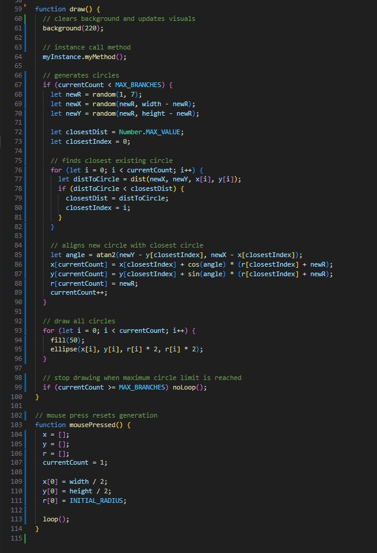
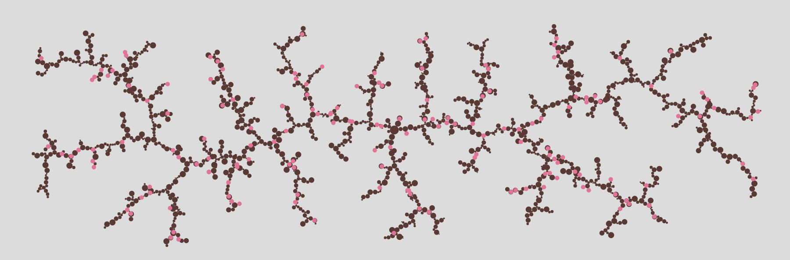
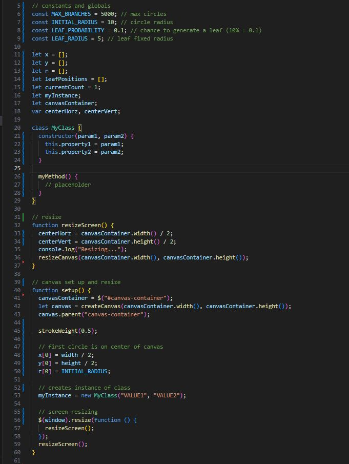
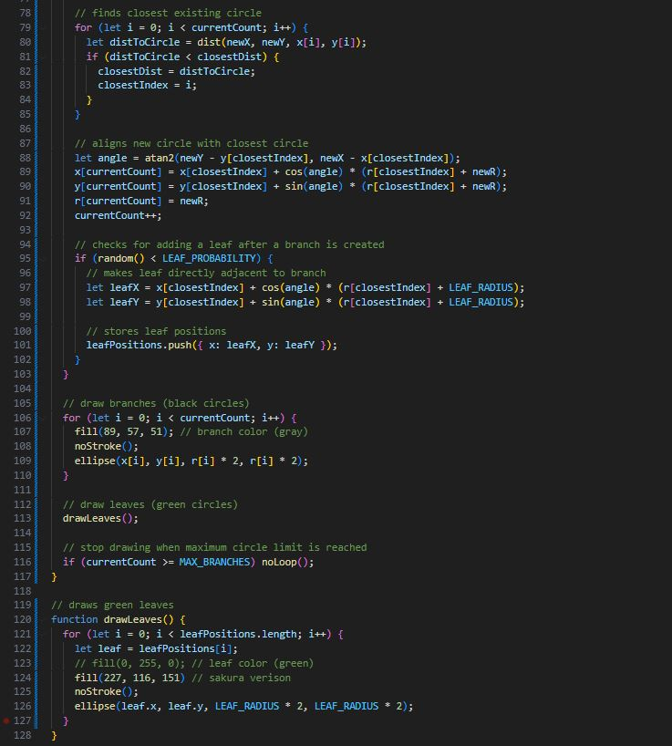
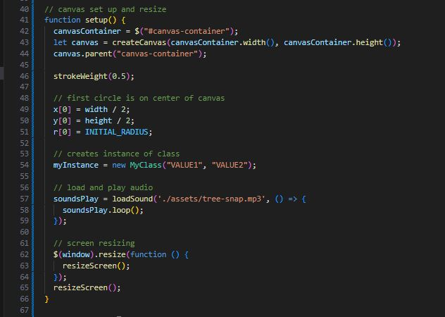
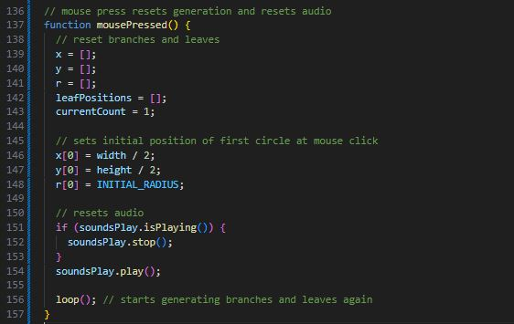

Experiment 3 - Generative Methods
Description
This experiment is similar to experiment 2 with the generative design where we base our code and design off of a free source generative design. This experiment differs in what you are required to make.
I chose to meet the requirement for replicating a natural process by doing fractal and recursive patterns and growth and decay to simulate tree branches and leaves growing.
Technical
Imitate
For this project I took inspiration from the design and code of a generative design we were able to choose from for this assignment.
Design Link
Intergrate
To start this project my goal was to create a plant growing. I started this by replicating the branching circle design that I based from the reference design.

 
I was practically done with just this alone but I needed to really show that this is a tree so I decided to add leaves that have a chance to grow touching the branches like real leaves.
This approach was easy as I did the same as the branches with small tweaks to adjust it so it doesn't overtake the branches.
At this point I was basically done but I went further and adjusted the branch colors to brown to look like branches.

 
Innovate
I was happy with this project as it was and you can tell there was innovation with the leaves generation as seen under integration.
To finish this up we were challenged to add audio to our project to enhance the simulation.
I went through some audio files I found but the best was by far this one I found of branches snapping which could sound like a tree growing really fast.
 
Reflection
This experiment was really easy to do as it was similar to experiment 2. I didn't really have an issue with recreating the branching design. I did have an issue turning it into lines so I scrapped that idea.
I think this experiment really was fun and interesting as I was able to learn to make a branching circle as well as learning to overlay the green leaves generating design over it which was something I troubleshooted a small bit.
I'm quite proud of how this turned out as it looks like a sakura branch growing which is quite nice.
I kept a few other implementation designs that I didn't use in this final take as comments, like as clicking will grow the branch from that point to simulate planting seeds and the original green leaves color.